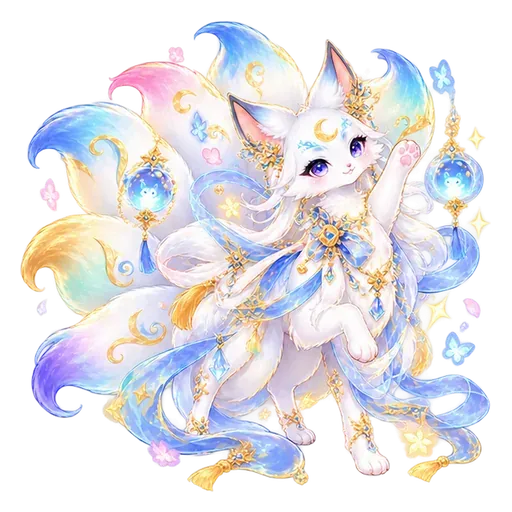

단원고 1-A · 김민지코인 890

!
미호 신화방어공격
레벨 3 · 진화까지 150
연속 12일 · 고1 3위
3과 단어7 / 20 · 연속 정답 6
cultivate
/ˈkʌltɪveɪt/ · 동사

딩동! 재배하다, 기르다 가 맞았다.
미호의 경험치가 10 올랐다!
미호의 경험치가 10 올랐다!
바둑판 바닥 위의 펫, 두 줄 테두리 창, ▶ 커서 메뉴, 한 글자씩 나오는 대사. 도트 글꼴은 글자에만 쓰고 펫 그림은 그대로 고해상도. 밥 주기는 펫이 먼저 말을 거는 식. ← 몬스터 갈래 목록
/ˈkʌltɪveɪt/ · 동사
